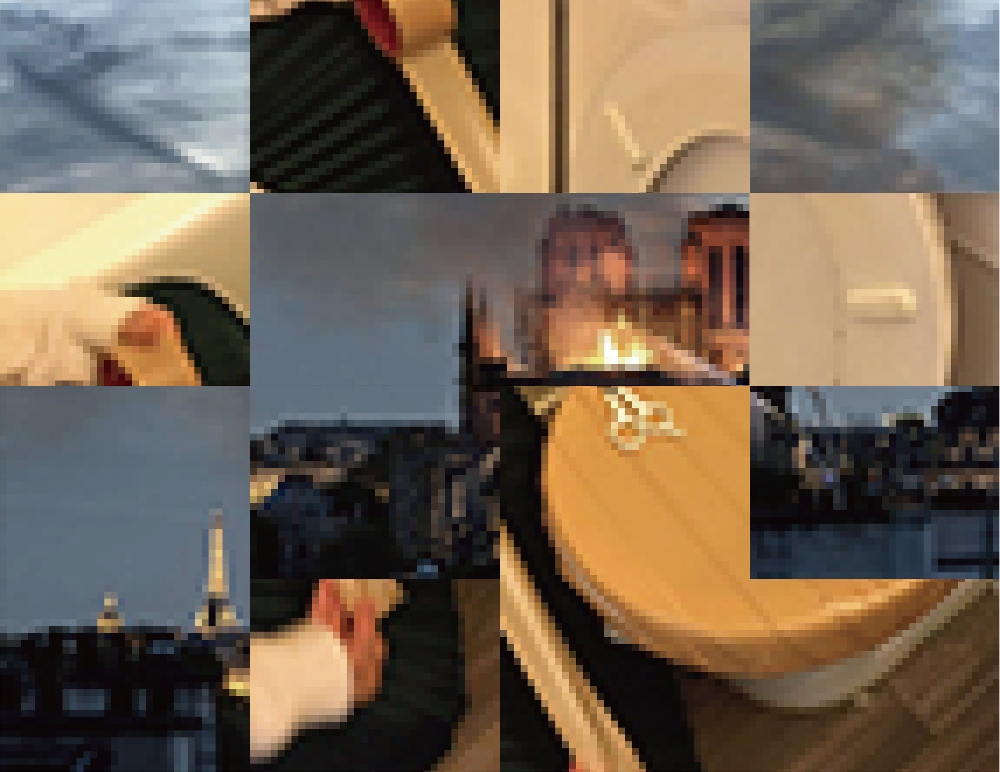
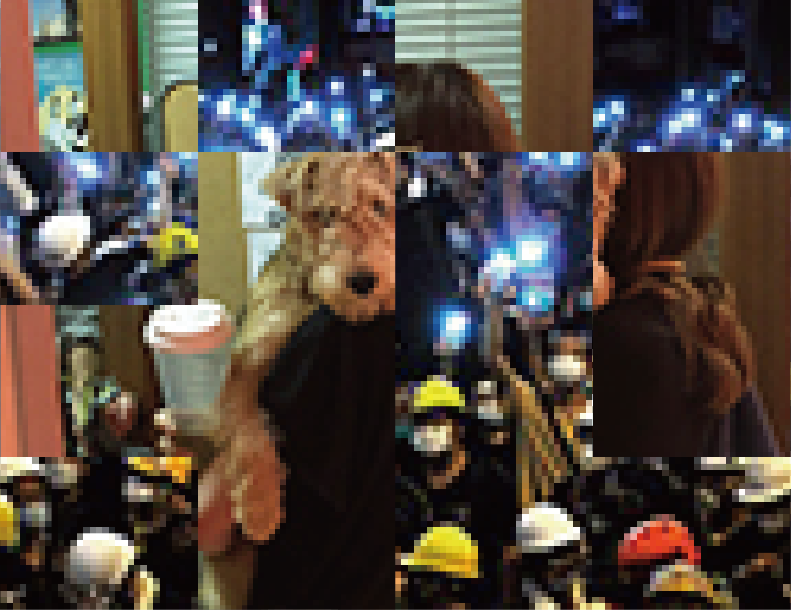

Nomad History
2019, Jisoo Seo
"Nomadic" is what can be settled anywhere.
This work utilizes images floating around on the Internet.
These light images can be taken lightly and settled anywhere.
This work combines a small image of an individual's history (such as graduation, marriage and daily life) and social history floating on the Internet.
This image of the work is not absolute and can be mixed in various ways using nomadic images. It also can be displayed without any physical substance by printing, projection or just exposure to the Internet.
----------------------------------------------------------
----------------------------------------------------------
01 Toilet Notre-Dame

02 Graduation Sulli

03 Puppy Protest

04 Marriage Summit